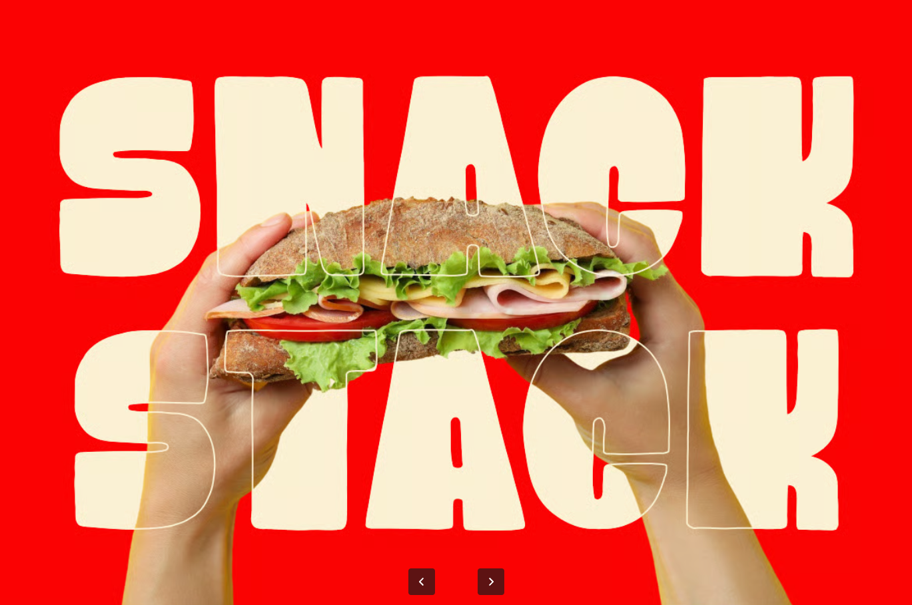

Simple step-by-step recipes designed for beginners.

Homemade cheesy pizzas.
Café style burgers.
Crispy restaurant fries.
Refreshing café beverages.
Midnight Cravings helps mothers and beginners prepare trending midnight cravings at home through simple guided recipes, reducing dependency on outside food.